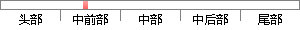

论文》 首次将他们相提并论，曹丕在该文中历数当时的文坛名流，特别举出“鲁国孔融文举、广陵陈琳孔璋、山阳王粲仲宣、北海徐干伟长、陈留阮瑀元瑜、汝南应玚德琏、东平刘桢公干”等七人，并评价“斯七子者，于学无所遗、于辞无所假，咸以自骋骥騄于千里，仰齐足而并驰。
片段位置图

相似结果|
1
原句片段：“斯七子者，于学无所遗、于辞无所假，咸以自骋骥騄于千里，仰齐足而并驰。
相似片段 1：曹丕称颂"七子"说;"斯七子者,于学无所遗,于辞无所假,咸以自骋骥于千里,仰齐足而并驰。""七子"的著作,六朝晚期已有散失,至宋朝时已多数...辛保平《语文...
相似片段 2：山阳王粲仲宣,北海徐干伟长,陈留阮瑀元瑜,汝南应瑒德琏,东平刘桢公干。斯七子者,于学无所遗,于辞无所假,咸以自骋骥騄于千里,仰齐足而并驰。以此相 服,亦...
相似片段 3：广陵陈琳孔璋,山阳王粲仲宣,北海徐幹伟长,陈留阮踽元瑜,汝南应瑒德琏,东平刘桢公幹:斯七子者,于学无所 遗,于辞无所假,咸以自骋骥骤于千里,仰齐足而并驰...
相似片段 4：斯七子者,于学无所遗,于辞无所假, 咸以自骋骥騄于千里,仰齐足而并驰,以此相服,亦良难矣。……王粲长于辞赋,徐干时有齐气,然粲之匹也。……琳、瑀之...
相似片段 5：文章第二段在介绍建安七子之后,略总一笔:“斯七子者,于学无所遗,于辞无所假,咸以自骋骥骤于千里,仰齐足而并驰,以此相服,亦良难矣”。对于这末一句,...
相似片段 6：,广陵陈琳孔璋,山阳王粲仲宣,北海徐幹伟长,陈留阮瑀元瑜,汝南应瑒德琏,东平刘桢公幹:斯七子者,于学无所遗,于辞无所假,咸以自骋骥騄于千里,仰齐足而并驰...
相似片段 7：,广陵陈琳孔璋,山阳王粲仲宣,北海徐干伟长,陈留阮瑀元瑜,汝南应瑒德琏,东平刘桢公干:斯七子者,于学无所遗,于辞无所假,咸自以骐骥碌于千里,仰齐足而并驰。...
相似片段 8：、山阳王粲仲宣、北海徐干伟长、陈留阮瑀元瑜、 汝南应(王易)德琏、东平刘桢公干,斯七子者,于学无所遗,于辞无所假,咸以自骋骥騄于千里,仰齐足而并驰。...
相似片段 9：徐干伟长、陈留阮瑀(yǔ)元瑜、汝南应瑒(chàng)德琏(jiǎn)、东平刘桢公干,斯七子者,于学无所遗,于辞无所假,咸自以骋骥騄(lù)于千里,仰齐足而并驰...
2
原句片段：琳孔璋、山阳王粲仲宣、北海徐干伟长、陈留阮瑀元瑜、汝南应玚德琏、东平刘桢公干”等七人，并评价
相似片段 1：曹丕说:“今之文人,鲁国孔融文举,广陵陈琳孔璋, 山阳王粲仲宣,北海徐干伟长,陈留阮瑀元瑜,汝南应瑒德琏,东平刘桢公干。斯七子者,于学无所遗,于辞无所假,咸...
相似片段 2：曹丕在《典论·论文》中写道:今之文人,鲁国孔融文举、广陵陈琳孔璋、山阳王粲仲宣、北海徐干伟长、陈留阮瑀元瑜、汝南应瑒德琏、东平刘桢公干,斯七子者,于学无...
相似片段 3：今之文人,鲁国孔融文举,广陵陈琳孔璋,山阳王粲仲宣,北海徐干伟长,陈留阮瑀元瑜,汝南应瑒德琏,东平刘桢公干:斯七子者,于学无所遗,于辞无所假,咸自以骐骥碌...
相似片段 4：今之文人,鲁国孔融文举,广陵陈琳孔璋,山阳王粲仲宣,北海徐干伟长,陈留阮瑀元瑜,汝南应瑒德琏,东平刘桢公干:斯七子者,于学无所遗,于辞无所假,咸自以骐骥碌...
相似片段 5：今之文人,鲁国孔融文举,广陵陈琳孔璋,山阳王粲仲宣,北海徐干伟长,陈留阮瑀元瑜,汝南应瑒德琏,东平刘桢公干:斯七子者,于学无所遗,于辞无所假,咸自以骐骥碌...
相似片段 6：今之文人:鲁国孔融文举、广陵陈琳孔璋、山阳王粲仲宣、北海徐干伟长、陈留阮瑀(yǔ)元瑜、汝南应瑒(chàng)德琏(jiǎn)、东平刘桢公干,斯七子者,于学无所遗...
相似片段 7：三国曹魏名臣.因文采出众,魏文帝曹丕《典论·论文》有"今之文人,鲁国孔融文举,广陵陈琳孔璋,山阳王粲仲宣,北海徐幹伟长,陈留朊瑀元瑜,汝南应瑒德琏,东平刘祯公...
|
※ 片段修改建议 ※
近似词参考：- 首次：初次
- 相提并论：等量齐观
- 当时：那时 其时
- 名流：名人 名士 绅士
- 特别：出格 分外 特殊 希奇 稀奇 迥殊 尤其
系统自动生成语句：论文》 初次将他们等量齐观，曹丕在该文中历数那时的文坛名人，出格举出“鲁国孔融文举、广陵陈琳孔璋、山阳王粲仲宣、北海徐干伟长、陈留阮瑀元瑜、汝南应玚德琏、东平刘桢公干”等七人，并评价“斯七子者，于学无所遗、于辞无所假，咸以自骋骥騄于千里，仰齐足而并驰。
注：本片段修改建议为系统自动生成，仅供参考。